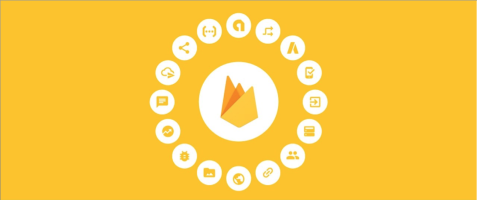
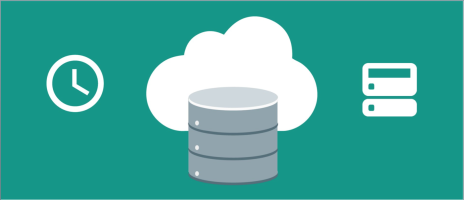
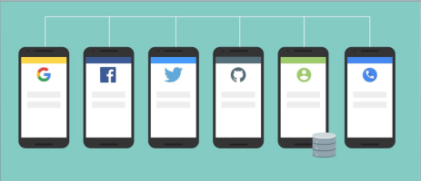
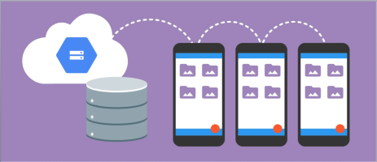
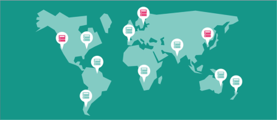
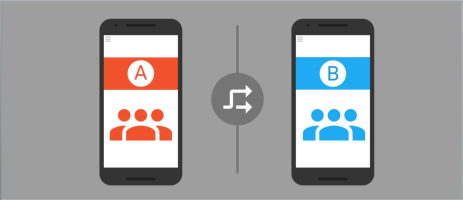
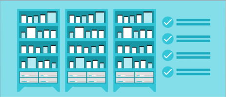
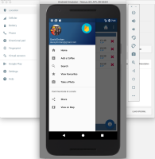

6: Firebase
David Drohan
,
Eamonn de Leastar
&
John Fitzgerald
,
WIT
09: Intro

09: Database

10: Authentication

10: Storage

11: Hosting

11: Remote Config

11: Crash Reporting
11: Cloud Messaging
11: Test Lab

11: Extras
Lab-09

What’s New in 2017